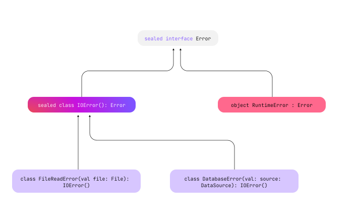

密封类与密封接口
Sealed classes and interfaces provide controlled inheritance of your class hierarchies. All direct subclasses of a sealed class are known at compile time. No other subclasses may appear outside the module and package within which the sealed class is defined. The same logic applies to sealed interfaces and their implementations: once a module with a sealed interface is compiled, no new implementations can be created.
Direct subclasses are classes that immediately inherit from their superclass.
Indirect subclasses are classes that inherit from more than one level down from their superclass.
When you combine sealed classes and interfaces with the when expression, you can cover the behavior of all possible
subclasses and ensure that no new subclasses are created to affect your code adversely.
Sealed classes are best used for scenarios when:
- Limited class inheritance is desired: You have a predefined, finite set of subclasses that extend a class, all of which are known at compile time.
- Type-safe design is required: Safety and pattern matching are crucial in your project. Particularly for state management or handling complex conditional logic. For an example, check out Use sealed classes with when expressions.
- Working with closed APIs: You want robust and maintainable public APIs for libraries that ensure that third-party clients use the APIs as intended.
For more detailed practical applications, see Use case scenarios.
Java 15 introduced a similar concept, where sealed classes use the
sealedkeyword along with thepermitsclause to define restricted hierarchies.
Declare a sealed class or interface
To declare a sealed class or interface, use the sealed modifier:
// Create a sealed interface
sealed interface Error
// Create a sealed class that implements sealed interface Error
sealed class IOError(): Error
// Define subclasses that extend sealed class 'IOError'
class FileReadError(val file: File): IOError()
class DatabaseError(val source: DataSource): IOError()
// Create a singleton object implementing the 'Error' sealed interface
object RuntimeError : Error
This example could represent a library's API that contains error classes to let library users handle errors that it can throw. If the hierarchy of such error classes includes interfaces or abstract classes visible in the public API, then nothing prevents other developers from implementing or extending them in the client code. Since the library doesn't know about errors declared outside of it, it can’t treat them consistently with its own classes. However, with a sealed hierarchy of error classes, library authors can be sure that they know all the possible error types and that other error types can't appear later.
The hierarchy of the example looks like this:

Constructors
A sealed class itself is always an abstract class, and as a result, can't be instantiated directly.
However, it may contain or inherit constructors. These constructors aren't for creating instances of the sealed class itself
but for its subclasses. Consider the following example with a sealed class called Error and its several subclasses,
which we instantiate:
sealed class Error(val message: String) {
class NetworkError : Error("Network failure")
class DatabaseError : Error("Database cannot be reached")
class UnknownError : Error("An unknown error has occurred")
}
fun main() {
val errors = listOf(Error.NetworkError(), Error.DatabaseError(), Error.UnknownError())
errors.forEach { println(it.message) }
}
// Network failure
// Database cannot be reached
// An unknown error has occurred
You can use enum classes within your sealed classes to use enum constants to represent states and provide
additional detail. Each enum constant exists only as a single instance, while subclasses of a sealed class may
have multiple instances.
In the example, the sealed class Error along with its several subclasses, employs an enum to denote error severity.
Each subclass constructor initializes the severity and can alter its state:
enum class ErrorSeverity { MINOR, MAJOR, CRITICAL }
sealed class Error(val severity: ErrorSeverity) {
class FileReadError(val file: File): Error(ErrorSeverity.MAJOR)
class DatabaseError(val source: DataSource): Error(ErrorSeverity.CRITICAL)
object RuntimeError : Error(ErrorSeverity.CRITICAL)
// Additional error types can be added here
}
Constructors of sealed classes can have one of two visibilities: protected (by default) or
private:
sealed class IOError {
// A sealed class constructor has protected visibility by default. It's visible inside this class and its subclasses
constructor() { /*...*/ }
// Private constructor, visible inside this class only.
// Using a private constructor in a sealed class allows for even stricter control over instantiation, enabling specific initialization procedures within the class.
private constructor(description: String): this() { /*...*/ }
// This will raise an error because public and internal constructors are not allowed in sealed classes
// public constructor(code: Int): this() {}
}
Inheritance
Direct subclasses of sealed classes and interfaces must be declared in the same package. They may be top-level or nested inside any number of other named classes, named interfaces, or named objects. Subclasses can have any visibility as long as they are compatible with normal inheritance rules in Kotlin.
Subclasses of sealed classes must have a properly qualified name. They can't be local or anonymous objects.
enumclasses can't extend a sealed class, or any other class. However, they can implement sealed interfaces:sealed interface Error // enum class extending the sealed interface Error enum class ErrorType : Error { FILE_ERROR, DATABASE_ERROR }
These restrictions don't apply to indirect subclasses. If a direct subclass of a sealed class is not marked as sealed, it can be extended in any way that its modifiers allow:
// Sealed interface 'Error' has implementations only in the same package and module
sealed interface Error
// Sealed class 'IOError' extends 'Error' and is extendable only within the same package
sealed class IOError(): Error
// Open class 'CustomError' extends 'Error' and can be extended anywhere it's visible
open class CustomError(): Error
Inheritance in multiplatform projects
There is one more inheritance restriction in multiplatform projects: direct subclasses of sealed classes must reside in the same source set. It applies to sealed classes without the expected and actual modifiers.
If a sealed class is declared as expect in a common source set and have actual implementations in platform source sets,
both expect and actual versions can have subclasses in their source sets. Moreover, if you use a hierarchical structure,
you can create subclasses in any source set between the expect and actual declarations.
Learn more about the hierarchical structure of multiplatform projects.
Use sealed classes with when expression
使用密封类的关键好处在于使用 when 表达式的时候。
The when expression, used with a sealed class, allows the Kotlin compiler to check exhaustively that all possible cases are covered.
In such cases, you don't need to add an else clause:
// Sealed class and its subclasses
sealed class Error {
class FileReadError(val file: String): Error()
class DatabaseError(val source: String): Error()
object RuntimeError : Error()
}
//sampleStart
// Function to log errors
fun log(e: Error) = when(e) {
is Error.FileReadError -> println("Error while reading file ${e.file}")
is Error.DatabaseError -> println("Error while reading from database ${e.source}")
Error.RuntimeError -> println("Runtime error")
// 不需要 `else` 子句，因为已经覆盖了所有的情况
}
//sampleEnd
// List all errors
fun main() {
val errors = listOf(
Error.FileReadError("example.txt"),
Error.DatabaseError("usersDatabase"),
Error.RuntimeError
)
errors.forEach { log(it) }
}
When using sealed classes with when expressions, you can also add guard conditions to include additional checks in a single branch.
For more information, see Guard conditions in when expressions.
In multiplatform projects, if you have a sealed class with a
whenexpression as an expected declaration in your common code, you still need anelsebranch. This is because subclasses ofactualplatform implementations may extend sealed classes that aren't known in the common code.
Use case scenarios
Let's explore some practical scenarios where sealed classes and interfaces can be particularly useful.
State management in UI applications
You can use sealed classes to represent different UI states in an application. This approach allows for structured and safe handling of UI changes. This example demonstrates how to manage various UI states:
sealed class UIState {
data object Loading : UIState()
data class Success(val data: String) : UIState()
data class Error(val exception: Exception) : UIState()
}
fun updateUI(state: UIState) {
when (state) {
is UIState.Loading -> showLoadingIndicator()
is UIState.Success -> showData(state.data)
is UIState.Error -> showError(state.exception)
}
}
Payment method handling
In practical business applications, handling various payment methods efficiently is a common requirement.
You can use sealed classes with when expressions to implement such business logic.
By representing different payment methods as subclasses of a sealed class, it establishes a clear and manageable
structure for processing transactions:
sealed class Payment {
data class CreditCard(val number: String, val expiryDate: String) : Payment()
data class PayPal(val email: String) : Payment()
data object Cash : Payment()
}
fun processPayment(payment: Payment) {
when (payment) {
is Payment.CreditCard -> processCreditCardPayment(payment.number, payment.expiryDate)
is Payment.PayPal -> processPayPalPayment(payment.email)
is Payment.Cash -> processCashPayment()
}
}
Payment is a sealed class that represents different payment methods in an e-commerce system:
CreditCard, PayPal, and Cash. Each subclass can have its specific properties, like number and expiryDate for
CreditCard, and email for PayPal.
The processPayment() function demonstrates how to handle different payment methods.
This approach ensures that all possible payment types are considered, and the system remains flexible for new payment
methods to be added in the future.
API request-response handling
You can use sealed classes and sealed interfaces to implement a user authentication system that handles API requests and responses.
The user authentication system has login and logout functionalities.
The ApiRequest sealed interface defines specific request types: LoginRequest for login, and LogoutRequest for logout operations.
The sealed class, ApiResponse, encapsulates different response scenarios: UserSuccess with user data, UserNotFound
for absent users, and Error for any failures. The handleRequest function processes these requests in a type-safe manner
using a when expression, while getUserById simulates user retrieval:
// Import necessary modules
import io.ktor.server.application.*
import io.ktor.server.resources.*
import kotlinx.serialization.*
// Define the sealed interface for API requests using Ktor resources
@Resource("api")
sealed interface ApiRequest
@Serializable
@Resource("login")
data class LoginRequest(val username: String, val password: String) : ApiRequest
@Serializable
@Resource("logout")
object LogoutRequest : ApiRequest
// Define the ApiResponse sealed class with detailed response types
sealed class ApiResponse {
data class UserSuccess(val user: UserData) : ApiResponse()
data object UserNotFound : ApiResponse()
data class Error(val message: String) : ApiResponse()
}
// User data class to be used in the success response
data class UserData(val userId: String, val name: String, val email: String)
// Function to validate user credentials (for demonstration purposes)
fun isValidUser(username: String, password: String): Boolean {
// Some validation logic (this is just a placeholder)
return username == "validUser" && password == "validPass"
}
// Function to handle API requests with detailed responses
fun handleRequest(request: ApiRequest): ApiResponse {
return when (request) {
is LoginRequest -> {
if (isValidUser(request.username, request.password)) {
ApiResponse.UserSuccess(UserData("userId", "userName", "userEmail"))
} else {
ApiResponse.Error("Invalid username or password")
}
}
is LogoutRequest -> {
// Assuming logout operation always succeeds for this example
ApiResponse.UserSuccess(UserData("userId", "userName", "userEmail")) // For demonstration
}
}
}
// Function to simulate a getUserById call
fun getUserById(userId: String): ApiResponse {
return if (userId == "validUserId") {
ApiResponse.UserSuccess(UserData("validUserId", "John Doe", "john@example.com"))
} else {
ApiResponse.UserNotFound
}
// Error handling would also result in an Error response.
}
// Main function to demonstrate the usage
fun main() {
val loginResponse = handleRequest(LoginRequest("user", "pass"))
println(loginResponse)
val logoutResponse = handleRequest(LogoutRequest)
println(logoutResponse)
val userResponse = getUserById("validUserId")
println(userResponse)
val userNotFoundResponse = getUserById("invalidId")
println(userNotFoundResponse)
}